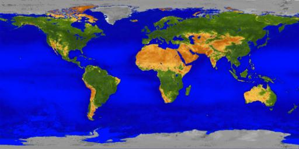
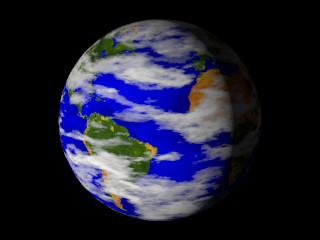
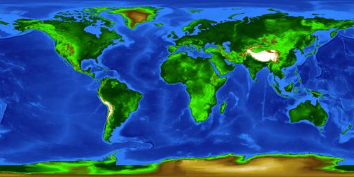
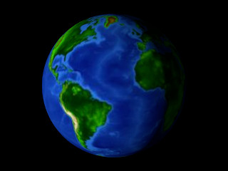
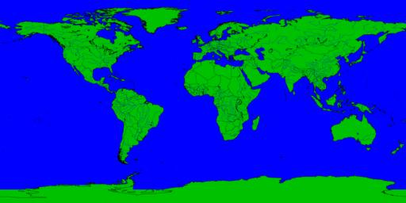
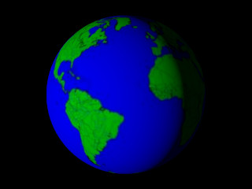
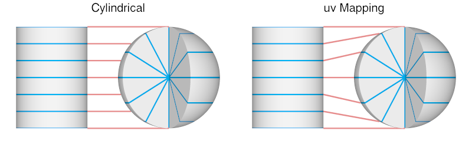

| theearth_bigearth.jpg | ‘True’ colour representation - high resolution |
| theearth_topography.jpg | Colours indicate Heights and Depths |
| theearth_mapperwdb.jpg | World DataBase Country markings ca. 1990 |
| theearth_bigearth.jpg | |
|  |  |
| theearth_topography.jpg | |
|  |  |
| theearth_mapperwdb.jpg | |
|  |  |
Version 1.0 recommended cylindrical mapping, to match the projection of the image map. That was incorrect, as can be seen in this illustration:

Compare the renders on this page with a version 1.0 cylindrical render, and check them against a physical globe if you get the opportunity.
The SDL code is copyright © 2005, 2007 Chris Bartlett and © 2023, 2024 Richard Callwood III. Some rights reserved. The image maps are public domain in the United States.
This library is free software; you can redistribute it and/or modify it under the terms of the GNU Lesser General Public License version 2.1 as published by the Free Software Foundation.
This library is distributed in the hope that it will be useful, but WITHOUT ANY WARRANTY; without even the implied warranty of MERCHANTABILITY or FITNESS FOR A PARTICULAR PURPOSE.
{kind=link}
{kind=link}
{kind=link}